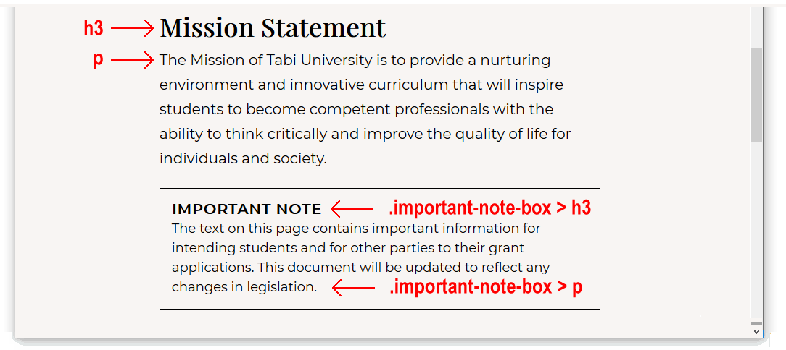
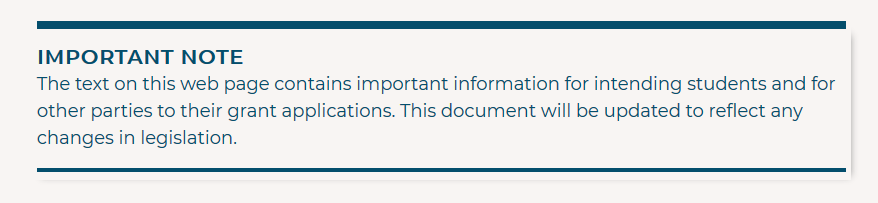
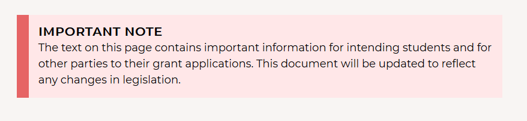
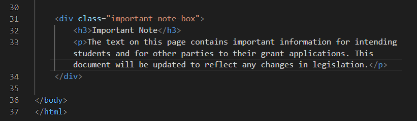
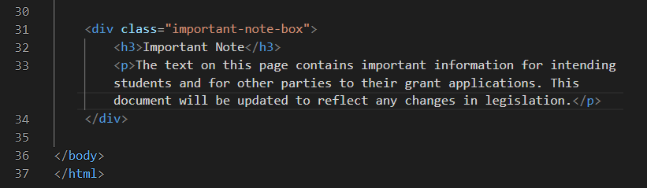

Learning Goals
At the end of this Tutorial you will be able to:
- Understand the concept of the ‘box model ’ in styling and positioning elements on a web page.
- Apply properties and values in CSS for three components of the box model: padding, borders and margins.
About ‘panels’ in web pages
In this Tutorial you will work with these files:
- The page-10.html web page, which contains the student-computer-screen.jpg image.
- The page-10.css stylesheet.
You downloaded and unzipped these three files in the previous Tutorial.
Open the HTML and CSS files in Visual Studio Code.
Working with your sample web page
In this Tutorial you will work with these files:
- The page-9.html web page, which contains the student-computer-screen.jpg image.
- The page-9.css stylesheet.
You downloaded and unzipped these three files in the previous Tutorial.
Open the HTML and CSS files in VS Code
Styling your panel boxes
Follow these steps to update the stylesheet that controls the appearance of your page-9.html web page.
- In VS Code, switch to the page-9.css stylesheet. At the top of the file, you can see the following web browser resets.
* { padding: 0; margin: 0; border: none; box-sizing: border-box }
img { display: block; width: 100%; height: auto }
- At the bottom of the stylesheet, copy-and-paste the following new CSS style selector and declaration.
.important-note-box {
margin: 54px 0;
padding: 16px;
border-style: solid;
border-width: 1px;
border-color: #000;
}
- Save the CSS file, and view your web page in your web browser. It should look as shown below.
 As you can see:
As you can see:
- All four panel boxes now have a black, one-pixel wide border around them. This is what you want.
- Unfortunately, the <h3> and <p> child elements inside the panel boxes have the same font and spacing CSS values as the sub-headings and paragraphs outside the panel boxes. This is not what you want.
 Let's fix this.
Let's fix this.
- At the bottom of the stylesheet, copy-and-paste the following new CSS style selector and declaration.
.important-note-box > h3 {
font-family: 'Montserrat', sans-serif;
font-size: 20px;
margin-top: 0;
margin-bottom: 2px;
letter-spacing: 1px;
text-transform: uppercase;
}
Because of the parent-child selector combination of .important-note-box > h3, this set of style rules applies only to h3 sub-headings that are inside a panel box div with that class name.
No other h3 sub-headings on the web page are affected.
- At the bottom of the stylesheet, copy-and-paste the following new CSS style selector and declaration.
.important-note-box > p {
font-size: 18px;
line-height: 1.5;
margin-bottom: 0;
}
Because of the parent-child selector combination of .important-note-box > p, this set of style rules applies only to paragraphs of text that are inside a panel box div with that class name.
No other text paragraphs on the web page are affected.
- Save the CSS file, and view your web page in your web browser. All four panel boxes should look like the one shown below.

Adding visual effects to your panel boxes
In this final section, you will apply different visual styles to each of the four panel boxes on your page-9.html web page.
- Your first step in applying four different visual styles is to create four new class names, and apply a different class name to each of the four panel boxes.
In VS Code, open your page-9.html web page, and add the second class name of box-style-1 to the first panel box as shown below.
<div class="important-note-box box-style-1">
- Repeat this step for the three other panel box divs, increasing the number in the class name each time. Your HTML file should now look as shown below.

- The existing important-note-box class will be used to ‘basic’ styles such as top and bottom margins, and font-family and font-size.
- The new box-style-1 and similar classes will be used to ‘fancy’ styles such as text, border and background colours to give each box a distinctive visual appearance.

- Save your HTML file.
- In VS Code, switch to your style-9.css stylesheet. To visual effect you want to achieve for the first panel box is shown below.
 At the bottom of your stylesheet, copy-and-paste these two new styles.
At the bottom of your stylesheet, copy-and-paste these two new styles.
.important-note-box.box-style-1 {
border-color: #1FA441;
background-color: #E4F5E8;
box-shadow: 8px 10px 8px #888;
}
.important-note-box.box-style-1 > h3 { color: #1FA441 }
- Now for the second of the four panels. Here is the visual effect you want.

At the bottom of your stylesheet, copy-and-paste these three new styles.
.important-note-box.box-style-2 {
padding: 16px 0 16px 0;
border-width: 8px 0 4px 0;
border-color: #044E6C;
}
.important-note-box.box-style-2 > h3 { color: #044E6C }
.important-note-box.box-style-2 > p { color: #044E6C }
- You want your third panel box to look as follows.

At the bottom of your stylesheet, copy-and-paste this new styles.
.important-note-box.box-style-3 {
border-width: 0 0 0 20px;
border-left-color: #E66465;
background-color: #FFE7E8
}
- You want your fourth and final panel box to look as shown below.
 At the bottom of your stylesheet, copy-and-paste these three new styles.
At the bottom of your stylesheet, copy-and-paste these three new styles.
.important-note-box.box-style-4 {
padding: 22px;
border-radius: 10px;
border-color: #2c4763;
background-color: #1f364d;
}
.important-note-box.box-style-4 > h3 { color: #9cb3c9 }
.important-note-box.box-style-4 > p { color: #fff }
- Save the CSS file, and view your web page in your web browser.
Uploading your files to GitHub
After finishing your web pages and stylesheets (and removed any errors), you are now ready to upload them to your account on GitHub.
- Sign in to your account at GitHub.com. At the left of the screen, you can see a list of your repositories.

- On your GitHub home page, click the name of the repository that holds your web pages. Its name will look as follows, where username is your chosen username on GitHub.
username.github.io

- On the next screen displayed, near the right of the screen, you can see a button named Add file.

- At the right of this button is a dropdown arrow. Click on the arrow and choose the option Upload files.

- Select or drag-and-drop the following files to upload them to your GitHub account:
page-9.html
style-9.css
student-computer-screen.jpg
- Finally, scroll down to the bottom of the GitHub screen, enter a short message in the Commit changes box and click the Commit changes button.
Your web page, stylesheet and image are now published on GitHub at the web address similar to the following, where username is the username you have chosen for your GitHub account:
https://username.github.io/page-9.html
It may take a few minutes for your uploaded files to appear on GitHub.
 Use the Tab key to indent the two child elements (a sub-heading and a text paragraph) of this div from the left edge of the screen. See below.

Use the Tab key to indent the two child elements (a sub-heading and a text paragraph) of this div from the left edge of the screen. See below.
